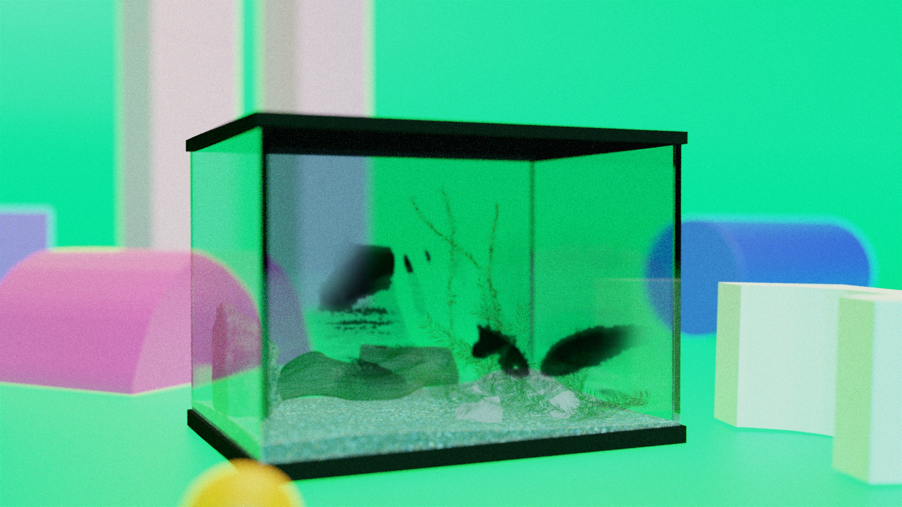
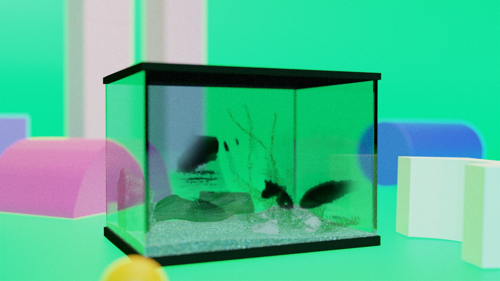

The soaked soil
Taking the shape of a mountain
Our river
Flows into yesterday's late sun
Fish try to shun their reflection
Bubbles wrapped the words filling up the fish tank
Fish die in between the gaps of language
Banana leaves brush away the dust on the table
Lungs that refuse to be cleansed
Thermos is a container for storing the shadow of the mountain
The inner shell broken
The mountain walks away in the night
Everything is collected into a shriveled wooden drawer
Bamboo baskets piled on the concrete floor, swaying
The grey soil flowing
Filling up all the old boundaries
The dried earth needs no expression
All decisiveness and hesitation lie underneath the smooth surface
Direction& Animation& Sound by Yujie Xu
Production by Matt Hamilton
Duration: 05'28''
Medium: 2D, 3D, cell animation, mixed media
Year: 2024
 
